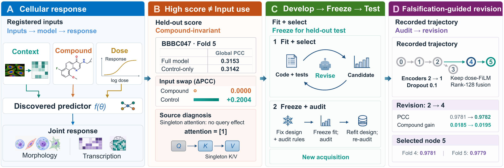
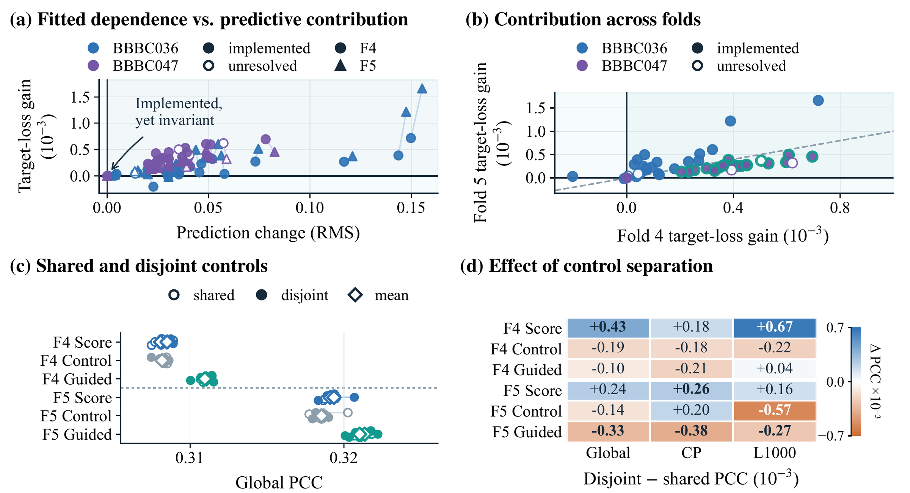
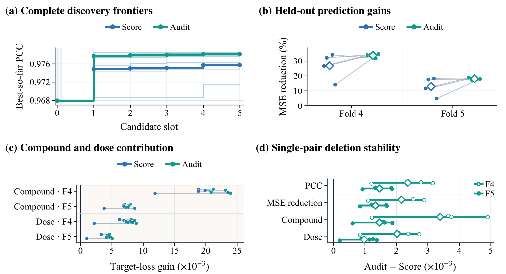
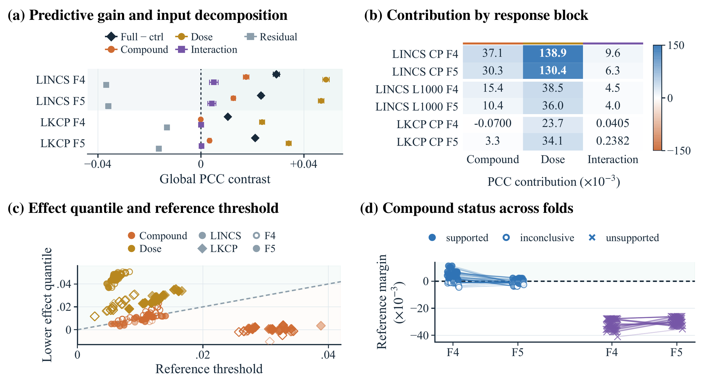
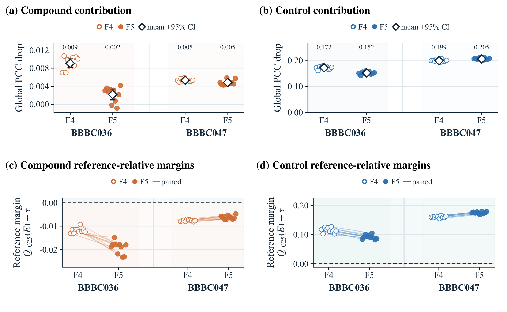
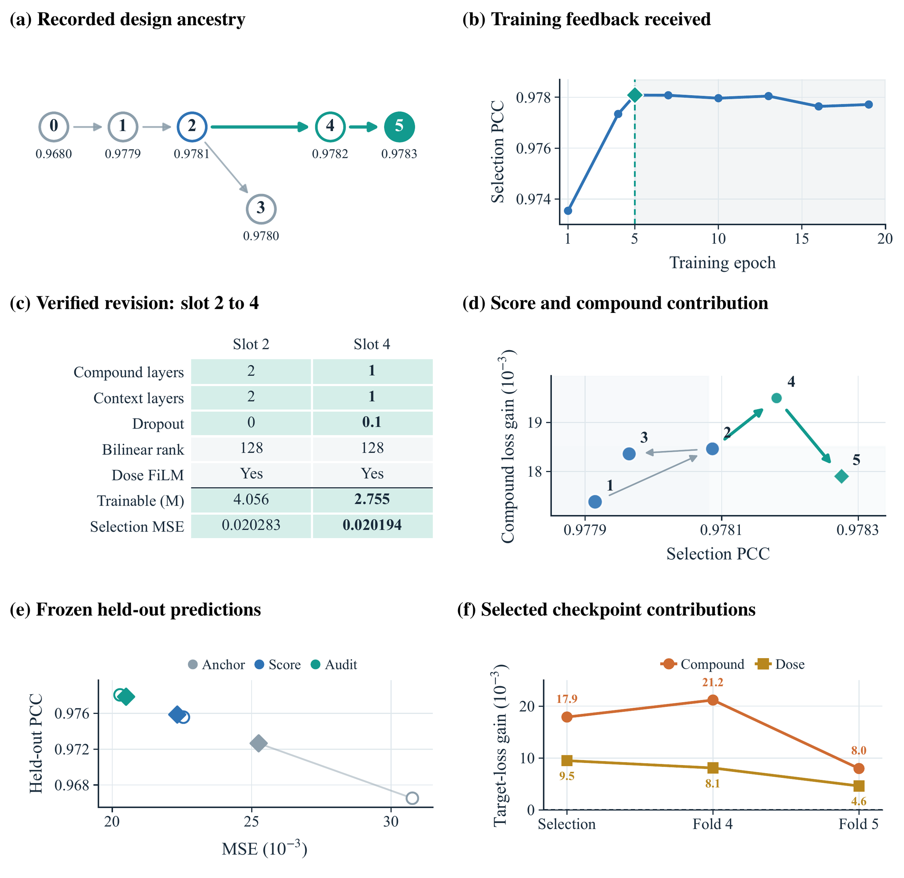

Source consumption
Can the input enter the computation?
Inspect the registered claim and its cited source path. An apparently conditional operation can be mathematically inactive.
Auditing Input-Use Claims from Source Code to Predictive Contribution
in Agent-Discovered Cell Models
Does a cell model use the perturbation it was given?
CellAudit connects the computation in source code to a fitted model’s behavior, then tests whether that behavior helps predict cellular responses.
1 Sun Yat-sen University2 University of Macau3 Sichuan University4 Zhejiang University5 University of British Columbia6 Tencent AI Lab
01 / THE FRAMEWORK
Three questions connect an input-use claim to the computation, the fitted predictor, and the observed response.

Can the input enter the computation?
Inspect the registered claim and its cited source path. An apparently conditional operation can be mathematically inactive.
Do predictions change with the input?
Replace one input while fixing the checkpoint and all other inputs. Measure the resulting prediction distance.
Does the original input help?
Compare target loss and predictive score under the correct and replacement inputs.
An executable path, prediction sensitivity, and predictive benefit answer different questions. Replacement effects are defined by the registered protocol.
THE COUNTEREXAMPLE
A score-selected model predicts cellular responses almost as well as its control-only counterpart. Yet replacing compound identity leaves its predictions exactly unchanged.
Source inspection explains why: the compound query attends to a single key–value pair. Its normalized attention weight is always one.
Read the source-to-behavior analysis ↗Five paired refits. Full − control-only PCC: +0.0011
95% paired-seed CI [−0.0005, +0.0027]. Compound invariance also persists with physically disjoint control wells.
02 / THE EVIDENCE
Across 48 sampled candidates, 47 change predictions under compound replacement on both folds. Twenty show a positive target-loss interval on both folds.
One square per generated source. Select a candidate to inspect its evidence.
48 sources · 20 positive on both folds · 27 other sensitive · 1 invariant
Dataset–policy-balanced, source-structure-stratified sample: 48 sources and 96 same-checkpoint fold evaluations. Target-loss intervals resample source scaffolds, conditional on checkpoints and registered donor maps. Counts describe this sample.

03 / FROM DIAGNOSIS TO REVISION
An audit can become feedback for model discovery: make the route executable, measure its effect, and learn a useful increment over a control-only predictor.
Compound effect 0.0000
Compound effect +0.0074
Compound effect +0.0048
BBBC047, Fold 5. These are three discovery settings. Prediction-score means summarize five refits; constrained and guided means summarize ten trajectory endpoints. Compound effects are factorial PCC effects averaged over the other input’s two states. Positive mean contributions are distinct from the paper’s reference-relative qualification criterion.
Five paired sci-Plex searches compare score feedback with an audit-enriched feedback package under matched training and selection rules.
Five paired trajectories; both folds evaluate the same selected checkpoints. Whiskers show 95% paired-t intervals. The intervals span zero, so the mean improvements remain suggestive.

04 / ACROSS ACQUISITIONS
LINCS-selected model designs are frozen and refit on the independently acquired LKCP cohort. Predictive gains and dose contribution persist; compound identity does not meet the same criterion.
Same model designs.
A new acquisition.
Dose · passing refits
Compound identity · passing refits
Counts hold on each of the two LKCP evaluation folds. Ten selected endpoint instances contain six unique configurations, with five refits per instance. A positive mean compound allocation on Fold 5 does not imply that the reference-relative criterion is met.



05 / OPEN THE EVIDENCE
Follow the repository’s task contracts, frozen-model audit, and reproducibility guide. Extend the task registry, candidate language, or LLM provider through documented interfaces.
The full framework, experiment protocols, original figures, and uncertainty analysis.
Read PDF02 ↗Discovery, deterministic source checks, replacement tests, and structured audit outputs.
Open GitHub03 ↗Data preparation, supported reproduction levels, provenance, and integrity checks.
Read the guideInstall the package, then validate the registered configuration. The quickstart walks through data preparation, discovery, and model auditing.
Full setup instructions ↗git clone https://github.com/limengran98/CellAudit.git cd CellAudit python -m venv .venv # Activate .venv for your operating system. python -m pip install -e . cellaudit validate
Discover, Falsify, Revise: Auditing Input-Use Claims from Source Code to Predictive Contribution in Agent-Discovered Cell Models
@misc{li2026cellaudit,
title = {Discover, Falsify, Revise: Auditing Input-Use
Claims from Source Code to Predictive Contribution
in Agent-Discovered Cell Models},
author = {Li, Mengran and Li, Bo and Zhang, Chengyang
and Yan, Yang and Xu, Jinfeng and Tang, Zhenchao},
year = {2026},
url = {https://cellaudit-research.phuonganh49123.chatgpt.site}
}Model revision by diagnostic routing for morphological perturbation prediction.